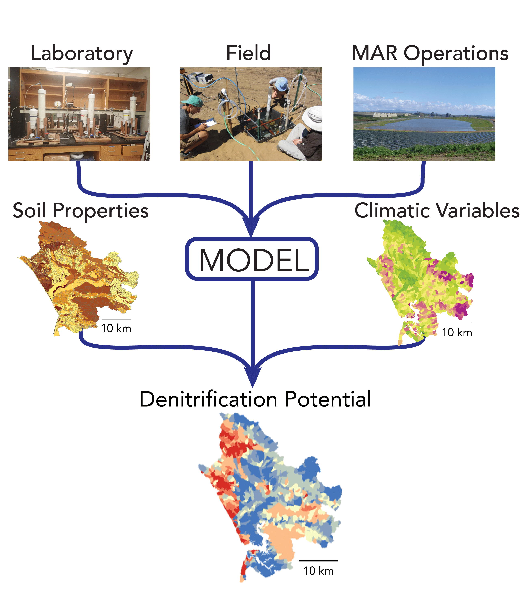

Research
Denitrification during managed aquifer recharge

Managed aquifer recharge (MAR) is an common technique for augmenting groundwater supplies, but it is important to ensure that the water used for infiltration doesn’t harm ambient groundwater quality. Under certain conditions, contaminants such as nitrate (NO3) can be removed as water infiltrates through shallow soils during MAR via a process called denitrification. Through lab, field, and modeling studies we are investigating how controlling factors such as infiltration rate and the amount of labile carbon can affect denitrification during infiltration. For more information see our recent publication Beganskas et al 2018 more to come soon!

Denitrification (and other biogeochemical processes) vary from site to site based on a host of factors including soil grain size, available organic carbon, precipiation, climate, water chemistry, microbial community structure and many others. This makes it difficult to develop process-based models that are robust at scales larger than a field site, as these factors have considerable spatial variability. To address this, we leverage the measurements that we have collected at multiple field sites to develop a modeling framework that combines a process-based understanding with machine learning methods to understand how denitrification varies across landscapes under varying climatic conditions. For more information see these slides that I presented at the International Symposium on Managed Aquifer Recharge in Madrid in May 2019.
Groundwater recharge suitability mapping in the MENA region

In an effort to increaase their water security, many countries in arid regions of the world such as the Middle East and North Africa (MENA) are implementing projects to increase groundwater supply and storage. I have been working as a NSF-GRIP intern with an international team from Jordan, Lebanon, Egypt, the Netherlands and the USA (USGS) to develop regional suitability maps to highlight promising locations for managed recharge projects. The maps take into account various physical, climatic and socio-economic parameters which are aggregated and weighted based on local proirities to create a composite suitability map. I have developed a web application to produce suitability maps which allows the user to adjust the weights and aggregating schemes and see the results in real time. Here is a link to the app and here is a link to slides that I presented at the International Symposium on Managed Aquifer Recharge in Madrid in May 2019.
Concentration discharge relationships